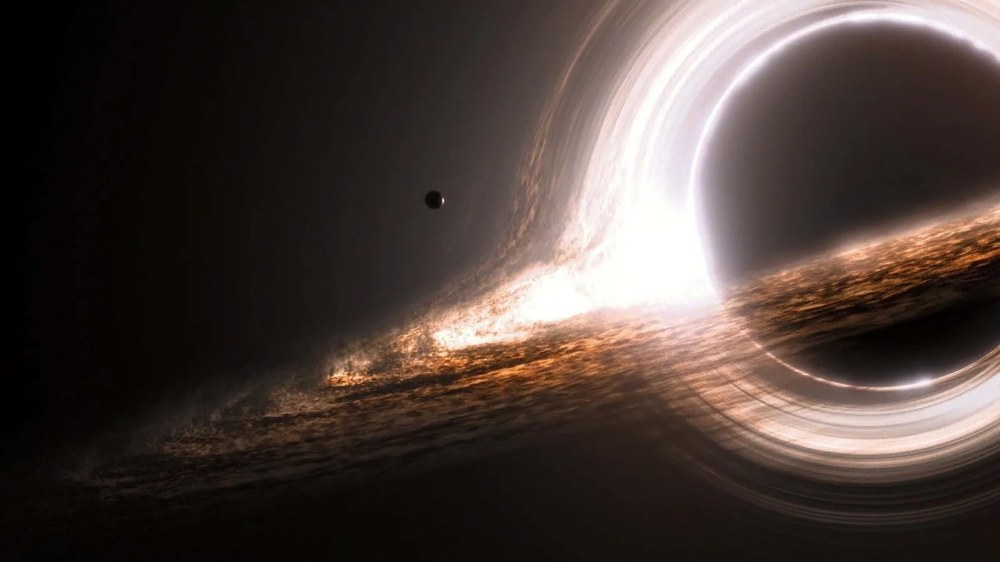

🌌 O Universo
O Universo reúne espaço, tempo, matéria e energia. A parte observável tem cerca de 46 bilhões de anos-luz de raio, e as observações indicam que ele se expandiu a partir de um estado extremamente quente e denso há cerca de 13,8 bilhões de anos. A expansão atualmente acelera, fenômeno associado à energia escura.
Matéria escura e energia escura parecem compor a maior parte do conteúdo do cosmos, mas sua natureza ainda não é conhecida. Telescópios e missões espaciais ajudam a investigar a origem, a estrutura e o futuro do Universo.

A imagem representa Gargantua, o buraco negro fictício do filme Interestelar, com efeitos baseados na relatividade geral. Buracos negros são regiões do espaço-tempo cujo campo gravitacional impede a fuga da luz. Podem nascer do colapso de estrelas massivas e crescer por acreção de matéria ou fusões.
O horizonte de eventos é o limite de não retorno. Mesmo invisíveis, esses objetos podem ser detectados pelos efeitos sobre estrelas, gás e luz ao redor. Sagitário A*, o buraco negro supermassivo no centro da Via Láctea, tem massa equivalente a cerca de 4,3 milhões de sóis. Em 2019, o Event Horizon Telescope capturou a primeira imagem direta de um buraco negro — a sombra de M87*, no centro da galáxia M87 — e repetiu o feito em 2022 com Sagitário A*. Em nenhum dos dois casos trata-se de uma fotografia do buraco negro em si, e sim do anel de gás quente e da sombra que ele projeta.